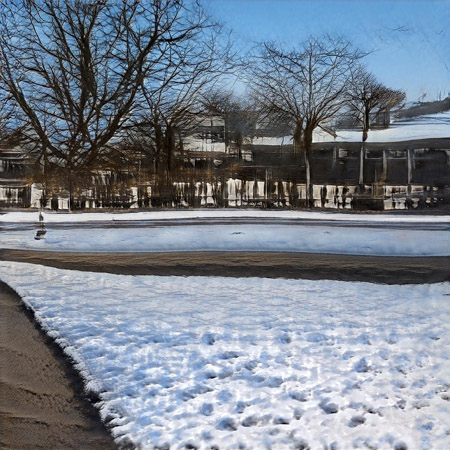
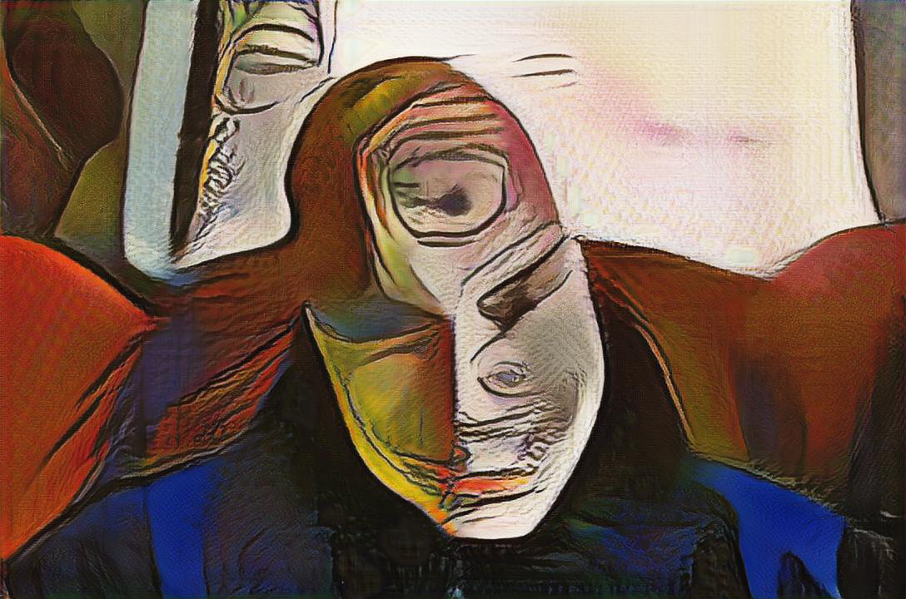

AI stuff
This page catalogs some experiments with AI in preparation for teaching classes. My intent is to explore this with students to see what we can develop from it.
Image Generation:

Probably my favorite work so far is with my own images using a GAN to create virtually unlimited variants. I can see theat the more specific the images I put in, the more realistic the output, here is a blog that talks about the work: https://rubaiyat.wordpress.com/2022/07/29/working-with-gans-and-images-v-1/
Text Generation:

I've been into horror for a while and though I have some misgivings about HPL as a person, I still find the cosmic horror compelling. Working with the text I've used GPT2 and created a text generator which you can use if you like, but you'll have to pay to run it (after the free trial period, of course). https://rubaiyat.wordpress.com/2022/08/01/not-lovecraft/
Image Creation from text:
(and images) Disco Diffusion, Dall-E, etc)
This may amount to burying the lede, but working with Disco Diffusion has been earth shattering.
Below are a bunch of experiments that I did with Style GAN, I really liked the way the Picasso style impacted images and movies, and was particularly drawn into the way that it worked with glitches.


Picassoing Glitches - this series was about working with the different types of file glitching you could get using data moshing in audacity, the process is pretty straight forward but I end up using Photoshop and the Photoshop RAW file format. It was interesting to me to see how it unmoshed some images and with others it created some interesting forms all the while holding on to some elements of the original images.
Image Tests Picasso - these are just some early tests to see what the style transfer did to recognizable images.